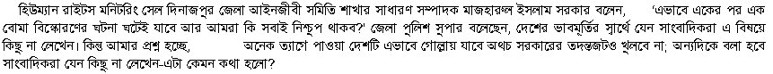

|
"bomb blast at Dinajpur " |
|||||||||||||
|
Severe bomb blast at Dinajpur: Part II - From Mukto-mona Dhaka Contact 
More on Dinajpur Epiode In my previous posting a brief account of Dinajpur bomb blasts was presented, in which at least seven bombs were exploded on Thursday, 13th February, the day following Eid-ul-Azhah. More detail report is now pouring in. According to press reports appearing in most local dailies picture is becoming clearer. According to one report 10 bombs exploded within five minutes. According to the latest report reaching here the bomb explosion took place in a students' hostel run by an Islamic belligerent organization known as Jamiyatul Mujahedin. The explosion took place early in the morning of 13th February and shook the town within a radius of 1 kilometer. The hostel has been completely demolished as result of severe explosion. It is learnt that house in which the hostel was established located at the mahalla known as Chhoto Gurgola, was rented by one Hafez Shahidulla, an inhabitant of Kamar-Kachai mahalla, near the central bus terminal in the name of the organization at a monthly rent of Tk 700/- about four months back. Immediately after explosion fire was set in and many trees around the locality got burnt. The fire brigade people with the cooperation of local people brought the fire under control. According to the eyewitnesses many a persons with some injured people were found to flee away in a microbus and rickshaws. An injured young man of about 25 years, named Badal, believed to be a member of the organization, was found lying inside the hostel. Police took him to Dinajpur Medical College Hospital. According to the police source he came from a village Moymandora under PS Saghata in Gaibandha district. It is further learnt that injured persons first took shelter at the residence of Hafiz Shahidullah from where they were shifted to an unknown place by a white microbus. It is now known the so called students hostel is in fact a residence of the members of this fundamentalist organization. Although, according to eyewitnesses, there were 10-12 students used to live there only one was found injured inside the hostel. Rest managed to escape. Police however apart from injured Badal arrested other two youths namely, Farukh and Shafiqul Islam in this connection. They are detained now at the Kotwali police station and intensive interrogation continuing.
The inhabitants of the locality informed that the many unknown faced and mysterious people including borkha clad women used to come to the hostel. Microbuses and motorbikes ware found coming and going at the dead night. After the explosion police cordoned off the demolished house from where they recovered
Two Revolvers & a pistol Few hundred rounds of bullets Variety of materials and equipment for making bombs (e.g. hundreds of time bomb electronic circuits) Few boxes of electronic batteries Remote controls Thin copper wires in large quantity Chemicals Residuals of exploded bombs
Apart from these materials police discovered receipt books for collection of subscription of the Jamiyatul Mujahedin Bangladesh, monographs dealing with how to rage armed assault, List of comrades and sympathizers, booklets of different armed organizations, bows and arrows, two mobile telephone sets, 40-50 pairs of shoes, and 70-80 pieces of clothing. The people of the locality however breathed a sigh of relief that it was good that bombs got exploded; otherwise these would have been used to kill innocent lives. People now are confident that in the name of running a hostel it was really a den of Islamic Fundamentalist's dreadful activity. The people of the locality wished that police would reveal the mystery and deal sternly with the culprits.
But would the police and intelligence department would be allowed to work independently and impartially ?
The activities of the Jamiyatul Mujahedin No body knows how the organization came into existence and how it is being funded. Is it just a local isolated belligerent organization or it is part of a greater network nationally or internationally connected ? It is learnt that the organization run different hostels and Islamic institutions such as Madrasas for girls, a Jikir training centre for women. The organization has 21 branch offices in the sadar Upazila itself. The same Hafiz Shahidullah took rented a house from one Shahid Hosain Ratan at a monthly rent of Tk 2,500 where in a women madrasa has been operating. In another locality known as Suihari, the same Hafiz yet took rent of another house from one Abul Hosen where in he has started the said Jikir training centre for the womenfolk. Some time back a report regarding questionable activities of the jikir centre was published in a popular national daily. There are other people like Hafiz Shahidullah who are either in their own name or under fictitious names running these type of activities of the organization Jamiyatul Mujahedin. In October last, Hafez Shahidullah and Kari Obaidul, an officer of Al Falah Alam (universal) Development Organization, rented a ground floor of a three storied building in Chhoto Gurgola and opened the madrasa. The demolished hostel, a two-room tin shed house was also rented by them being used as residence of the madrasa teachers, numbering seven or eight, said the eyewitnesses.
It is learnt that a team of bomb experts and a team of intelligence department arrived at Dinajpur yesterday (Friday, 14th February).
Latest Position A question has been peeping in the minds of the people how deep is the root of the Dinajpur bomb explosion ? Do the Dinajpur explosion have any connection with the Mymensingh Episode- or two are just isolated events and carried out by two isolated terrorist groups ?
Please click on the above picture to read the news [Courtesy: Prothom-alo] It is now learnt that the injured persons could successfully escaped to first Rangpur medical college hospital under the very nose of the police and other intelligence people. It is alleged that they have been under cover brought to Bogra and then to Dhaka for treatment. How was it possible ? The name of the two injured who received medical treatment at Rangpur medical college hospital for 8 hours are Abu Bakar, s/o Enayetur Rahman and Tariqul Islam, s/o Abul Hosain; one of them is very critically ill. They were admitted to the hospital at 10:40 morning being carried there by one Sarwar Hosain of Mahimganj of Rangpur. The police have so far arrested only two persons. They are Mohammad Farukh Hoasin, administrative official of Ayesha Siddiqa Salafia Islamia Balika Madrasa and one Hafez Habibur Rahman alias Shafiqul Islam- both of them were placed under police remand by the lower court (Amli-2 adalat of first class magistrate) for ten days. Another arrested person injured Badal transferred to Dhaka Medical college hospital. The police have yet recovered two pistols. All the establishments of the Islamist organization Jamiyatul Mujahedin - the madrasas, training centres and hostels were found closed and the officials, administrators and inhabitants now gone to underground. In the mean while, the intelligence team now operating at Dinajpur has found a sketch in which names of some places and key wards such as office room, Guard room, TV room, open space, grill etc. The police think many such instructive books were lost. Dinajpur police superintendent disclosed to Daily Star that they have collected important information from the two arrested madrasa teachers. A 3-member team of CID led by ASP Atiqur Rahman Munshi sent from Dhaka and a police team led by Kotwali PS officer in charge Shahid Shukrama are jointly investigating the incident. The fundamentalist organization has been carrying on underground work in the region for more that a year, police believed. 3en
Similarity with Parbatipur incident It may be recalled that in the last year on 20th May Police arrested a group of terrorists carrying anti-state leaflets, six receipt-books, ten audio cassettes, four diaries, three registry books and 25 petrol bombs from Parbatipur. They were "Commander" Sahabul Islam Sharif, Obaidullah, Lutfar Rahman, Mosharaff Hosain Julfikar, Anowar Hosen, Omar Farukh, Abu Bakar Siddiqu and Mostakim. The Dinajpur police suspect that those people are probably members of the same fundamentalist group as the receipt-books bear close similarity. Out of these eight this year on 7th February Mostakim and Mosharaff Hosen were released.
Bomb Blasts in other places
Are these events really isolated or are organized work of a cleverly interlinked network of several terrorist groups committed to Islamic fundamentalism. We need to know the answer from our government. Yes, we are glad to know that our home minister has ordered his police force to reveal the truth of several bomb explosion taking place after the Eid festivals. We sincerely wish the police to succeed.
Please click on the above picture to read the news [Courtesy: Prothom-alo]
In the meanwhile a red alert was issued to police stations and outposts in 16 districts under Rajshahi police range yesterday following Dinjpur bomb explosion. detective police have been aske to minitor activities and Islamic organizations in the region, reports Daily Star today (16th february). More news:
|
|||||||||||||